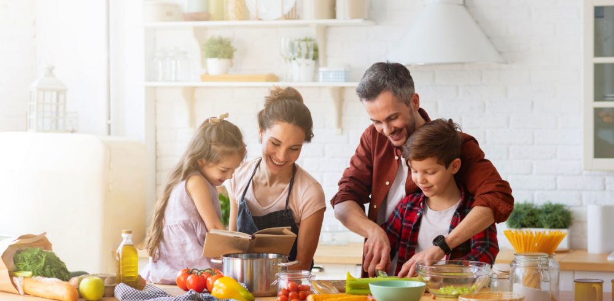

Giovanna Brunetti, 22 anos e Milena Schirley Medeiros, 23 anos.
Formadas pela PUCPR em 2024, Pós-graduadas em Nutrição Materno Infantil em 2025, com experiências individuais focadas em gestação, puerpério, fertilidade, amamentação, introdução alimentar, TEA, vegetarianismo e idosos. Além disso, colaboradoras de um projeto de frequência alimentar em universidades do Brasil, apresentado no CONBRAN (Congresso Brasileiro de Nutrição).
Buscamos além de nossa formação, sermos pessoas melhores e trocar experiências com nossos pacientes, em busca de uma parceria unificada e respeitosa acima de tudo, sempre aprendendo com nossos pacientes e priorizando um relacionamento ético.
Na nossa clínica, acreditamos que a nutrição vai muito além de simplesmente oferecer um plano alimentar; ela é uma ferramenta poderosa para transformar vidas e construir um futuro mais saudável. Nosso principal objetivo é ajudar gestantes, crianças, adolescentes e suas famílias a encontrar o equilíbrio por meio de uma alimentação adequada e hábitos saudáveis que perdurem por toda a vida.
O trabalho começa desde cedo, promovendo uma educação alimentar positiva e cativante. Queremos que as crianças cresçam em lares onde a alimentação saudável seja valorizada e incorporada de forma natural.
Atuamos de maneira integrada, orientando não apenas a criança, mas também os pais e responsáveis, para que juntos possam construir um ambiente que favoreça escolhas alimentares conscientes e sustentáveis.
Nosso compromisso vai além da saúde física; buscamos formar indivíduos mais autônomos e engajados com o próprio bem-estar. Incentivamos o desenvolvimento de habilidades culinárias desde cedo, mostrando que cozinhar é um ato de cuidado e amor consigo e com o próximo.
Nosso trabalho é fundamentado na prevenção. Queremos evitar o surgimento de doenças como obesidade, diabetes e hipertensão. Para isso, fornecemos às famílias a “fórmula” essencial: conhecimento, prática e motivação para manterem a saúde no longo prazo.
Nosso propósito é claro: formar gerações mais saudáveis, conscientes e felizes, transformando lares e, consequentemente, o mundo em um lugar melhor.

Atendemos tanto online quanto presencialmente, conforme a escolha do paciente. Antes das consultas, é necessário preencher um formulário para sabermos informações prévias, facilitando o atendimento.
Agendar Consulta